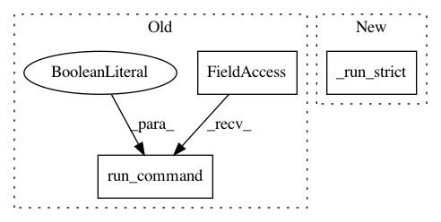

ca2eb49604d2454051ae4264b3b370d296c46855,reframe/core/schedulers/slurm.py,SlurmJob,_get_reservation_nodes,#SlurmJob#Any#,222
Before Change
raise JobError("could not extract the nodes names for "
"reservation "%s"" % valid_reservation)
completed = os_ext.run_command(
"scontrol -a show -o %s" % reservation_nodes, check=True)
node_descriptions = completed.stdout.splitlines()
return {SlurmNode(descr) for descr in node_descriptions}
def _get_nodes_by_name(self, nodespec):
After Change
return nodes
def _get_reservation_nodes(self, reservation):
completed = _run_strict("scontrol -a show res %s" % reservation)
node_match = re.search(r"(Nodes=\S+)", completed.stdout)
if node_match:
reservation_nodes = node_match[1]
else:
In pattern: SUPERPATTERN
Frequency: 4
Non-data size: 3
Instances
Project Name: eth-cscs/reframe
Commit Name: ca2eb49604d2454051ae4264b3b370d296c46855
Time: 2019-02-09
Author: karakasis@cscs.ch
File Name: reframe/core/schedulers/slurm.py
Class Name: SlurmJob
Method Name: _get_reservation_nodes
Project Name: eth-cscs/reframe
Commit Name: ca2eb49604d2454051ae4264b3b370d296c46855
Time: 2019-02-09
Author: karakasis@cscs.ch
File Name: reframe/core/schedulers/slurm.py
Class Name: SlurmJob
Method Name: _get_all_nodes
Project Name: eth-cscs/reframe
Commit Name: 6bcb02bd3a0fa3d77061ae7b952488850753a10d
Time: 2019-02-13
Author: manitaras@cscs.ch
File Name: reframe/core/schedulers/slurm.py
Class Name: SlurmJob
Method Name: _get_default_partition
Project Name: eth-cscs/reframe
Commit Name: ca2eb49604d2454051ae4264b3b370d296c46855
Time: 2019-02-09
Author: karakasis@cscs.ch
File Name: reframe/core/schedulers/slurm.py
Class Name: SlurmJob
Method Name: _get_nodes_by_name